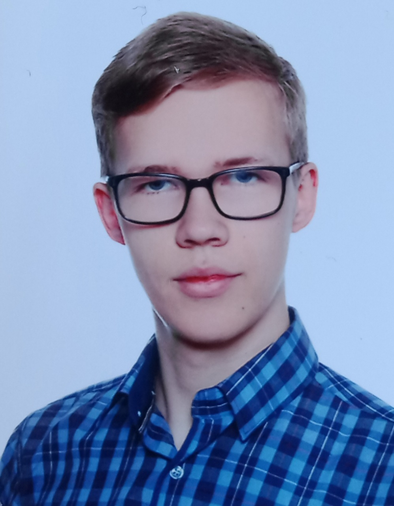

COMPUTER SCIENCE · SOFTWARE DEVELOPMENT · IT
Jakub
Burchat
Computer Science graduate with a strong interest in programming, software development, IT and game development.

01
About Me
I approach every project with commitment, focusing on building functional, thoughtful and useful solutions. I am interested in programming, modern technologies and software development.
My experience includes Python, PHP, SQL, GDScript, Windows and Linux, as well as software testing and defect analysis.
I particularly enjoy developing utility applications and games, combining programming with algorithms, optimization and problem solving. I expand my skills through university work, personal projects and independent learning.
I value accuracy, consistency, initiative and effective collaboration.
02
Skills
Tools & Systems
Libraries & Technologies
Computer Science & QA
03
Experience
Jul–Aug 2023
Software Testing Intern
SoftMedica Medical Software
- Performed manual functional and regression testing of medical software.
- Logged and tracked software defects.
- Collaborated with developers to verify fixes.
- Prioritized test cases based on severity and business impact.
Seasonal
Orchard Worker
Germany
- Performed outdoor agricultural and orchard-related tasks.
- Worked efficiently as part of a team in a physically demanding environment.
- Followed instructions and maintained attention to quality and safety.
3 years
Private Mathematics Tutor
Private Tutoring
- Provided individual mathematics tutoring for children and high-school students.
- Adapted explanations and exercises to individual needs.
- Helped students develop mathematical problem-solving skills.
04
Education
University of Gdansk
Master's Degree in Computer Science
Thesis: Oriented Coloring of Planar GraphsUniversity of Gdansk
Bachelor's Degree in Computer Science
Wincenty Pol High School in Czersk
Mathematics and Physics profile
05
Projects
01
3D Roguelike
Crafting Game
Personal Godot project focused on procedural world generation, crafting and multiplayer.
- Procedural world generation
- Chunk-based world loading
- Inventory and crafting systems
- NPC pathfinding
- Steam P2P multiplayer
Godot · GDScript · Steam
02
Tutoring Management
Desktop Application
A desktop application for managing private tutoring, lesson schedules, student payments and monthly revenue.
- Student records and unpaid-hours tracking
- Interactive weekly timetable
- Payment recording and revenue summaries
- SQLite persistent local storage
- Dark interface with Polish and English language support
Python · PySide6 · SQLite
03
Graph Coloring
Research
Master's degree research project involving algorithms for oriented coloring of planar graphs.
- Algorithm implementation and evaluation
- Graph generation and analysis
- Experimental performance comparison
- Benchmarking
Python · NetworkX · Algorithms
04
2D Roguelike
Platformer
Team-developed game created using Godot.
- Dynamic 2D lighting
- Interactive item mechanics
- Steam multiplayer
- Scoring and progression
- Team collaboration using Git
Godot · GDScript · Git
06
Achievements
2018–2021
GO-Now Fencing
Three years of GO-Now fencing training, developing discipline, concentration, perseverance and the ability to perform under competitive pressure.
Polish Champion — 2020Under-19 category
07
Additional Information
Languages
Polish — Native
English — C1 Advanced
Driving Licence
AM · B · B1
Interests
IT · Programming · Algorithms · Optimization · Software Development · Game Development
GET IN TOUCH